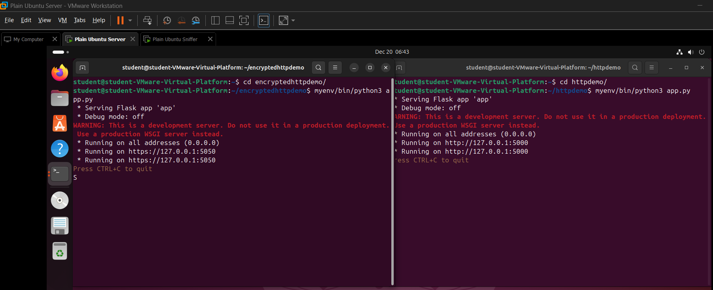
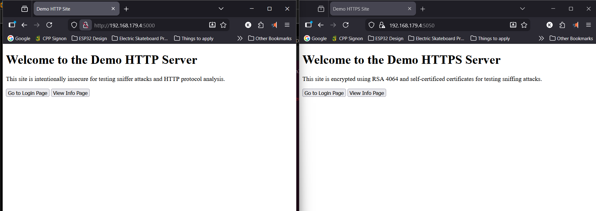
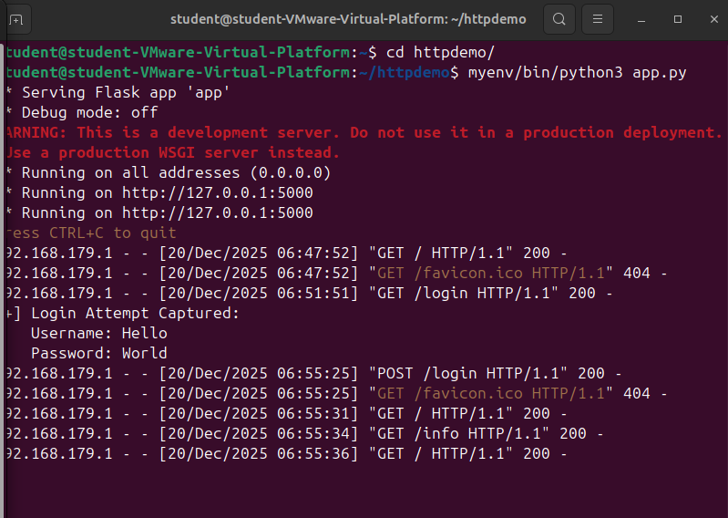
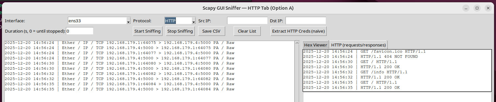
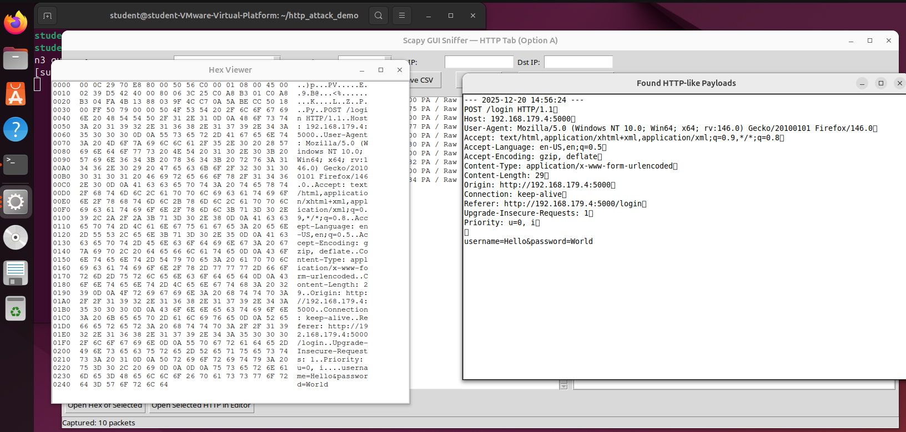
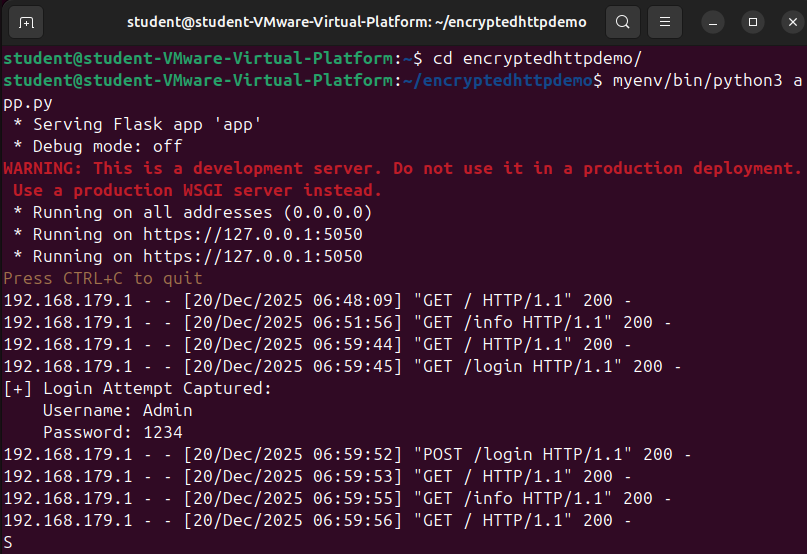
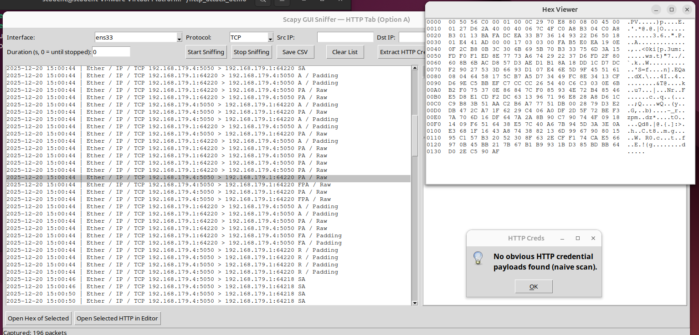

This project is a custom network packet sniffer and HTTP traffic analyzer built in Python and designed to run on a Linux-based virtual network. A packet sniffer is a tool that captures and inspects data packets—small units of information sent between computers over a network. To test the project safely, I created an isolated local area network (LAN) using multiple Ubuntu virtual machines, where one machine acted as a client, another as a web server, and a third ran the sniffer. This setup allowed me to observe real network communication without exposing any traffic to the internet. The project focuses on both unencrypted HTTP traffic and encrypted HTTPS traffic to demonstrate how data moves across a network and why secure protocols are important.

Picture showing HTTP and HTTPS servers running in the Server VM

Picture showing HTTP and HTTPS sites opened on the host machine
The core functionality of the sniffer is built using Scapy, a Python library that provides low-level access to network packets. Scapy allows the program to capture packets from a specific network interface (such as ethernet), identify protocols like TCP, UDP, ICMP, and HTTP, and extract both packet metadata and raw payload data. My program processes each packet in real time, displaying information such as source and destination IP addresses (numerical identifiers for devices on a network), ports, timestamps, and protocol type. For deeper inspection, the tool includes a hex viewer similar to other industry standard network analysis tools such as Wireshark, showing packet contents in both hexadecimal and readable ASCII formats. An HTTP-specific view reconstructs web requests and responses, making it easier to understand how web pages and form submissions are transmitted.

HTTP server's log showing recent user interactions

Sniffer GUI showing HTTP packets, capturing the same user interactions

Sniffer GUI showing HTTP credential data extraction from the captured packets
To make the tool usable without prior experience in packet analysis, I built a graphical user interface (GUI) using Tkinter, Python’s standard GUI framework. The interface allows users to start and stop packet capture, select which network adapter to monitor, apply protocol and address filters, and browse captured packets interactively. Captured traffic can also be exported to a CSV file for later analysis. The program built using Python’s threading module which allows the program to be responsive by separating each feature into their own threads such as the network capture and sorting thread, GUI thread and packet translation threads. Overall, this project strengthened my understanding of Linux networking fundamentals—such as IP addressing, routing, DNS, DHCP, and firewall behavior—while also reinforcing practical Python skills in real-time data processing, GUI development, program optimization via threading and low-level network programming.

HTTPS server's log showing recent user interactions

Sniffer GUI showing HTTPS packets, capturing the same user interactions but failing to decrypt the packets, and extract credential data
Feel free to check out the repository below see the specific code and methods used for this project.